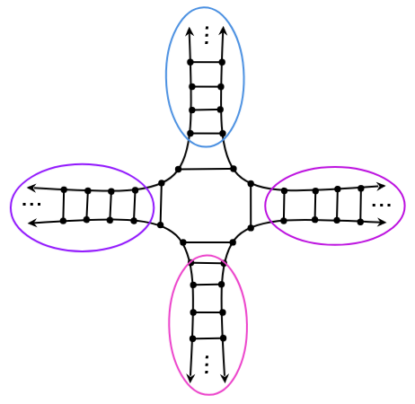

Research note
·
Igor
Santos
I am currently in the final year of my Bachelor's degree in Mathematics at the Institute of Mathematics and Computer Sciences (ICMC), University of São Paulo (USP). I conduct research under the supervision of Professor Dr. Leandro Fiorini Aurichi as a member of the Infinite Combinatorics Research Group at ICMC, focusing on infinite graph theory and selected topics in general topology.

Research interests
-
Infinite Graphs
-
General Topology
News
-
–
Encontro de Combinatória no Infinito
Organising committee · ICMC–USP, São Carlos
Papers & notes
Contact & affiliation
Institute of Mathematics and Computer Sciences
University of São Paulo· São Carlos, Brazil